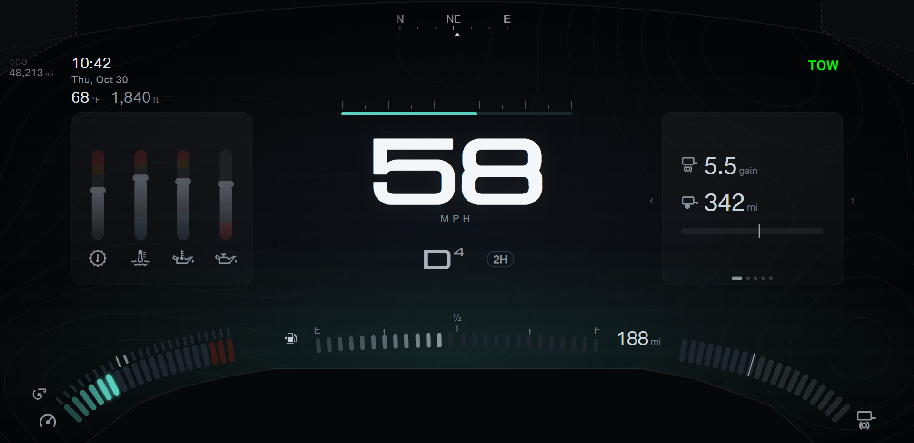
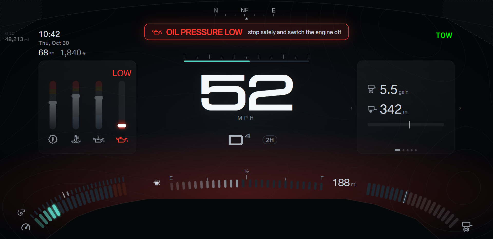
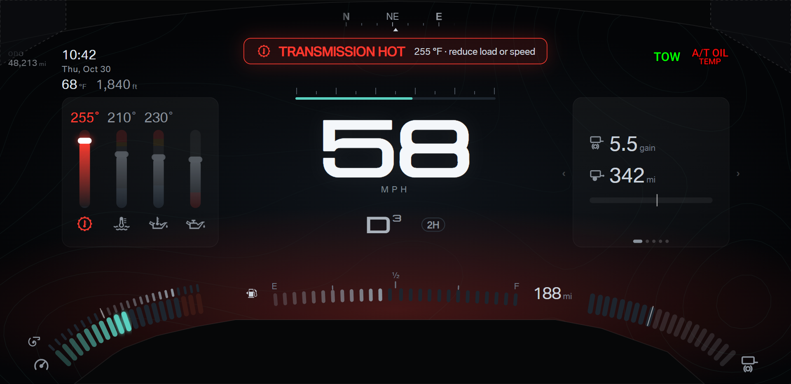
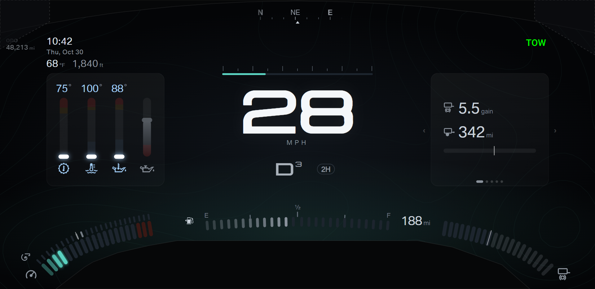
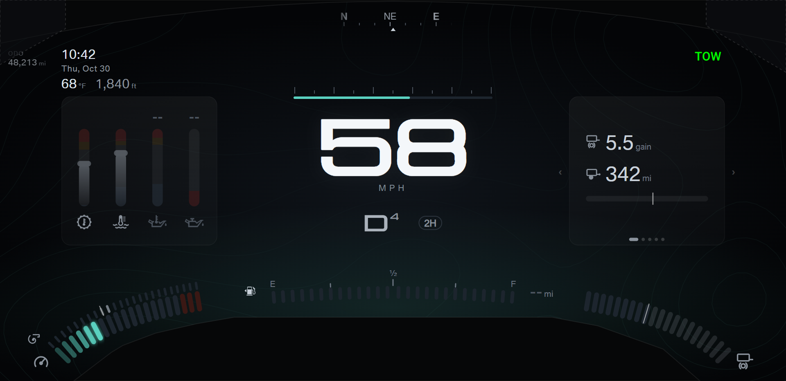
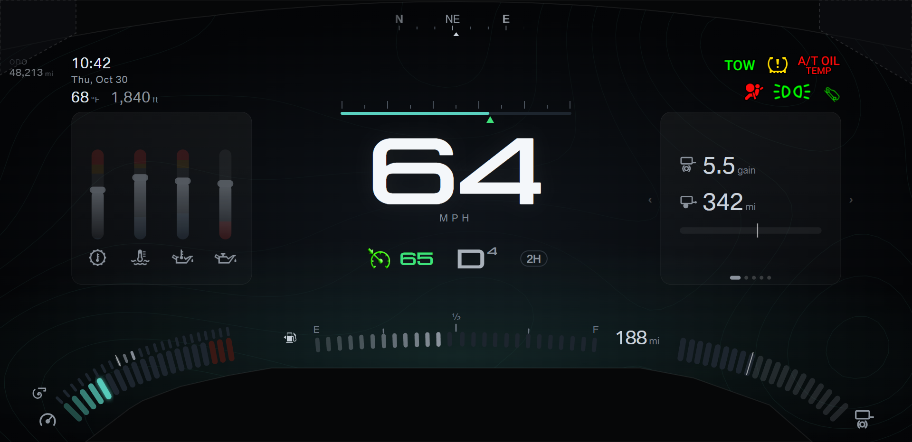

Your direction: the truck has no differential temperature; the card needs the coolant, engine oil, and transmission temperatures, and the oil pressure.
Every shot passes the margin check (capture.js: 6 shots). The shots use the recommended open picks: ticks B (round 26) and gear B (round 25).
oilPressurePercentage, the value that the stock Ford oil meter draws as a 0 to 100 % bar. The value is a gauge position, not psi,
so the column shows a bar and no number.-- and an empty bar.No new pick. Still open: ticks A or B (round 26) and gear A or B (round 25).





